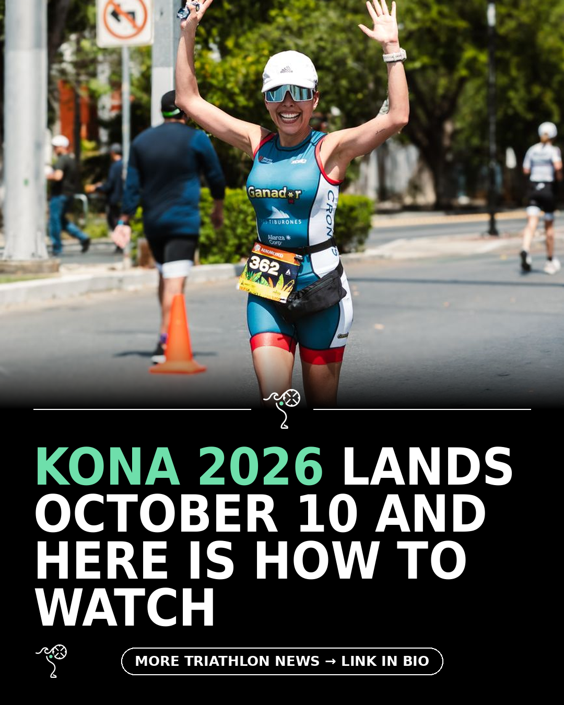

Triathlon News Daily
Thursday, 10 September 2026 · generated automatically

Today's stories
- Kona 2026 set for October 10 with full live coverage220 Triathlon
- Smart glasses arrive in triathlon as T100 and Ironman split220 Triathlon
- Celtman Xtri: a DNF, a Highland storm, and a hard lesson220 Triathlon
- Free six-month Ironman base plan drops ahead of 2026 season220 Triathlon
- Apple Watch Ultra 4 hands-on: the biggest leap in yearsDC Rainmaker
- A failed fuelling strategy equals a failed race. Here’s how to master your Ironman fuelling on race day220 Triathlon